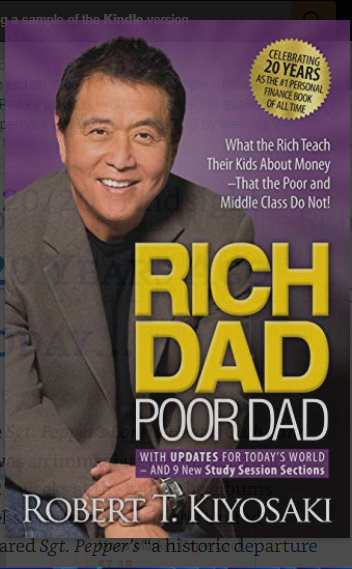

The summary on Blinkist starts with the idea that many of us are too afraid of being branded as a weirdo, in order to exit the rat race. We let the two main emotions everyone has around money dominate our decisions: fear and greed. That’s why we still stick to the outdated mantra “Go to school, go to college, get a job, play it safe.” when in reality no job is safe any more. For example, when you get a raise at your job, a wise choice would be to invest the extra money. Put it into something that builds wealth like stocks or bonds, which has risk, but a lot of potential. Maybe you find a good fund with a 60% chance to double your money within a year, but a 40% chance of losing it all. However, most likely your fear of losing the money altogether will keep you from doing so. But when your greed takes over, you might then spend the extra money on an improved lifestyle. You might buy a fancy new car, and the payments eat up the money, for instance. This way you’re almost certain to lose 100%. This already gives you a glimpse of how important it is to educate yourself financially. Since we receive no financial education in school or college, sadly , this is entirely up to you. Look around and you’ll see plenty of financially ignorant people in your own life. Just take a look at local politicians. Is their city in debt? Your mayor might be great, but unfortunately, he probably doesn’t know how to deal with money.
ब्लिन्किस्टको सारांश यो विचारबाट सुरु हुन्छ कि हामी मध्ये धेरैलाई मुसाको दौडबाट
“Success is the product of daily habits—not "सफलता दैनिक बानीको उत्पादन हो - होइन
जीवनमा एक पटक परिवर्तनहरू। बानीहरू आत्म-सुधारको मिश्रित रुचि हो।
यदि तपाइँ राम्रो परिणामहरू चाहनुहुन्छ भने, 1-Sentence-Summary: Unlimited Memory explores the most
effective ys
1-वाक्य-सारांश: असीमित मेमोरीले सबैभन्दा प्रभावकारी Wintering highlights the similarities between the cold season जाडो मौसमले चिसो मौसम बीचको समानतालाई हाइलाइट गर्दछ The Shallows explores the effects of the Internet
The Shallows ले इन्टरनेटको प्रभावहरू अन्वेषण गर्दछ The High 5 Habit is a self-improvement book that aims उच्च 5 बानी एक आत्म-सुधार पुस्तक हो जुन उद्देश्य हो
बाहिर निस्कन एक विचित्रको रूपमा ब्रान्ड हुन डराउँछौं।
हामीले पैसाको वरिपरि भएका दुईवटा मुख्य भावनाहरूलाई हाम्रा निर्णयहरूमा
हावी हुन दिन्छौं: डर र लोभ। त्यसैले हामी अझै पनि पुरानो मन्त्रमा अडिग छौँ
"स्कूल जानुहोस्, कलेज जानुहोस्, जागिर पाउनुहोस्, सुरक्षित खेल्नुहोस्।"
जब वास्तवमा कुनै पनि काम सुरक्षित छैन।

Atomic habits
once-in-a-lifetime transformations.”
“You should be far more concerned with your current trajectory
than with your current results.”
“Your outcomes are a lagging measure of your habits.
Your net worth is a lagging measure of your financial habits.
Your weight is a lagging measure of your eating habits.
Your knowledge is a lagging measure of your learning habits.
Your clutter is a lagging measure of your cleaning habits.
You get what you repeat.”
“Time magnifies the margin between success and failure.
It will multiply whatever you feed it. Good habits make time
your ally. Bad habits make time your enemy.”
“Goals are about the results you want to achieve.
Systems are about the processes that lead to those results.”
“If you want to predict where you’ll end up in life,
all you have to do is follow the curve of tiny gains or
tiny losses, and see how your daily choices will compound ten
or twenty years down the line.”
“Breakthrough moments are often the result of many previous
actions, which build up the potential required to unleash
a major change.”
If you find yourself struggling to build a good habit or
break a bad one, it is not because you have lost your ability
to improve. It is often because you have not yet crossed what
James calls, “Plateau of Latent Potential.”परमाणु बानीहरू
"तपाई आफ्नो वर्तमान प्रक्षेपण संग धेरै चिन्तित
हुनुपर्छ
तपाईको हालको नतिजाको तुलनामा।"
"तपाईंको नतिजाहरू तपाईंको बानीहरूको ढिलो मापन हो।
तपाईको नेट वर्थ तपाईको वित्तीय बानीको ढिलो मापन हो।
तपाईको वजन तपाईको खाने बानीको ढिलो मापन हो।
तपाईको ज्ञान तपाईको सिकाउने बानीको ढिलो मापन हो।
तपाइँको अव्यवस्था तपाइँको सफाई बानी को एक ढिलो उपाय हो।
तपाईले जे दोहोर्याउनु हुन्छ त्यही पाउनुहुन्छ।”
त्यसपछि लक्ष्यहरू सेट गर्न बिर्सनुहोस्। यसको सट्टा तपाईको प्रणालीमा
फोकस गर्नुहोस्।
आफ्नो बानी परिवर्तन गर्ने सबैभन्दा प्रभावकारी तरिका भनेको तपाईंले
के हासिल गर्न चाहनुहुन्छ भन्नेमा होइन, तर तपाईं को बन्न चाहनुहुन्छ
भन्ने कुरामा ध्यान केन्द्रित गर्नु हो।
व्यवहार परिवर्तनका चार नियमहरू हामीले राम्रो बानीहरू निर्माण गर्न
प्रयोग गर्न सक्ने नियमहरूको सरल सेट हो। तिनीहरू हुन्
(1) यसलाई स्पष्ट बनाउनुहोस्,
(2) यसलाई आकर्षक बनाउनुहोस्,
(3) यसलाई सजिलो बनाउनुहोस्,
(4) यसलाई सन्तोषजनक बनाउनुहोस्।
वातावरण त्यो अदृश्य हात हो unlimited memory
to retain information and improve memory skills
by
teaching its
readers some key aspects about the brain
and explaining advanced learning strategies
in an easy-to-follow
manner.असीमित मेमोरी
तरिकाहरू अन्वेषण गर्दछ
जानकारी राख्न र मेमोरी कौशल सुधार गर्न
यसको पाठकहरूलाई मस्तिष्कको बारेमा
केही प्रमुख पक्षहरू सिकाएर
र उन्नत सिकाइ रणनीतिहरूलाई पछ्याउन सजिलो
तरिकामा व्याख्या गर्दै। Wintering Summary
March 21, 2022 Maria Deac
of the year and the period of hardship in a human life,
by emphasizing how everything eventually passes in time,
and how we can learn to embrace challenging times by
learning from wolves, from the cold, and
how our ancestors dealt with the winter.शीतकालीन सारांश
मार्च २१, २०२२ मारिया डेक
मानव जीवनमा वर्ष र कठिनाइको अवधि,
सबै कुरा समयमै कसरी बित्छ भन्ने कुरामा जोड दिएर,
र हामी कसरी चुनौतीपूर्ण समयलाई अँगाल्न सिक्न सक्छौं
ब्वाँसाहरूबाट, चिसोबाट, र
हाम्रा पुर्खाहरूले जाडोसँग कसरी व्यवहार गरे। The Shallows Summary
March 18, 2022 Maria Deac
on the human brain, which aren’t entirely positive
, as our constant exposure to the online environment
through digital devices strips our ability to
target
our focus and stay concentrated,
all while modifying our brain neurologically
and anatomically. The Shallows सारांश
मार्च १८, २०२२ मारिया डेक
मानव मस्तिष्कमा, जुन पूर्णतया सकारात्मक छैन
, अनलाइन वातावरणमा हाम्रो निरन्तर एक्सपोजरको रूपमा
डिजिटल यन्त्रहरू मार्फत हाम्रो फोकसलाई
लक्षित गर्ने र एकाग्र रहन सक्ने
क्षमतालाई हटाउँछ,
हाम्रो मस्तिष्कलाई न्यूरोलोजिकल र शारीरिक रूपमा परिमार्ज The5 Habit Summary
February 9, 2022 Maria Deac
to help anyone who deals with self-limitations take
charge of their life by establishing a morning routine,
ditching negative talk, and
transforming their life through positivity and confidence
. 5 बानी सारांश
फेब्रुअरी 9, 2022 मारिया डेक
आत्म-सीमाहरूसँग व्यवहार गर्ने जो कोहीलाई मद्दत गर्न
बिहानको दिनचर्या स्थापना गरेर आफ्नो जीवनको चार्ज,
नकारात्मक बोल्न छोड्ने, र
सकारात्मकता र आत्मविश्वास मार्फत आफ्नो जीवन परिवर्तन गर्दै।